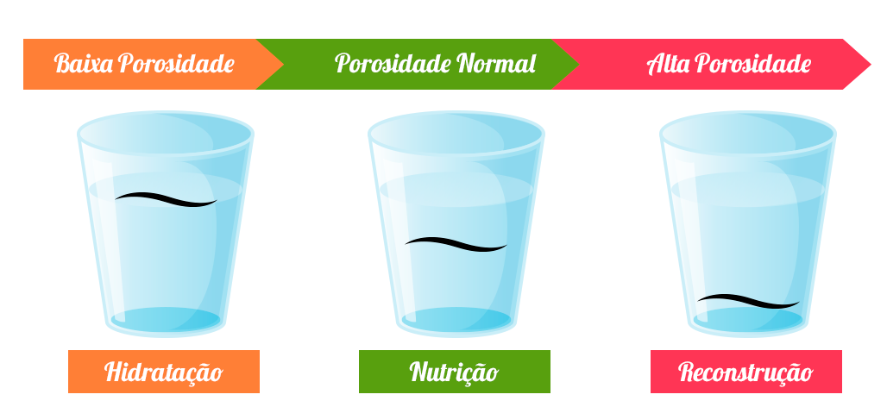
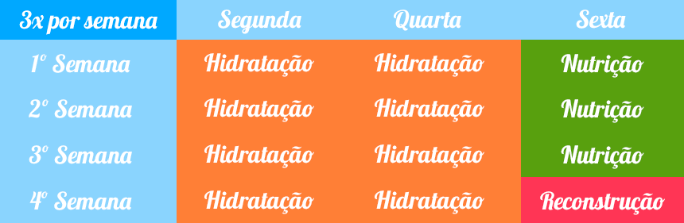

O QUE É O CRONOGRAMA CAPILAR?
O cronograma capilar é uma rotina de cuidados com os cabelos que intercala três tratamentos principais: hidratação, nutrição e reconstrução
Cada etapa do cronograma capilar oferece uma solução específica para cabelos danificados por fatores como poluição, incidência de raios solares, cloro da água, uso excessivo de chapinha, secador, babyliss, procedimentos químicos de coloração ou descoloração, entre outros.
PARA QUEM É INDICADO?
O cronograma é indicado para todos os tipos de cabelo, independe da sua textura ou curvatura, já que todos os fios podem sofrer com fatores externos. Ao intercalar os tratamentos, dentro de um período sugerido de quatro semanas, é possível suprir as necessidades dos fios e restaurar completamente a saúde capilar.
Por mais saudável que o seu cabelo esteja, ele é exposto à danos a todos os momentos, seja pela ação do secador de cabelo, chapinha, babyliss, ou até mesmo fatores externos que a gente não tem como controlar, como o sol, a poluição, a água do mar ou da piscina.
Se você faz algum tipo de processo químico no cabelo, alisamento ou uma tintura, os fios ficam ainda mais fragilizados e sofrem mais com essas agressões. Por isso é muito importante manter um cronograma capilar para devolver aos fios todos os nutrientes perdidos no dia a dia.
QUAIS OS BENEFÍCIOS?
Os resultados do tratamento podem ser sentidos já na primeira semana. Usando os produtos certos, obedecendo o tempo de ação indicado na embalagem e seguindo as fases sem falhas, não tem erro! Logo você já vai sentir o cabelo mais macio, sem frizz, brilhoso, saudável e com a elasticidade natural restaurada.
TESTE DO COPO:
O teste é feito com um copo de água filtrada e apenas alguns fios de cabelo limpo, que podem ser aqueles que saem naturalmente na escova ou no pente. Separe um copo transparente e água filtrada e comece o teste.
Passo 1: Encha o copo com água e coloque os fios de cabelo dentro;
Passo 2: Aguarde cerca de 10 minutos;
Passo 3: Observe se os fios afundaram, se ficaram no meio do copo ou se boiaram.
Resultado do teste: Se os fios afundaram no copo com água, é sinal de alta porosidade. Se os fios ficaram no meio do copo, significa média porosidade. Se os fios boiaram, é sinal de baixa porosidade.

ETAPAS:

HIDRATAÇÃO:
Ela pode ser considerada um dos tratamentos capilares mais conhecidos de todos os tempos e é muito importante no cronograma capilar.
Sempre que pensamos em cuidar dos cabelos, a hidratação é a primeira palavra que vem a mente. E não poderia ser diferente, afinal, ela é responsável por repor água e nutrientes essenciais que são perdidos diariamente. Manter uma rotina de hidratação fará com que os fios fiquem livres do ressecamento e cada vez mais saudáveis.
Procure produtos que tenham em sua formulação ativos como: D-Pantenol, Manteiga de Oliva, Óleo de Coco Extra Virgem, Babosa e Aminoácidos funcionais.
PASSOS DA HIDRATAÇÃO:
HIGIENIZAÇÃO:
Lavar o cabelo de preferência com um shampoo anti-resíduo. As escamas dos fios irão se abrir para receber o creme. Após enxaguar, retire o excesso de água com uma toalha, e em seguida use um pouco o secador. Quanto mais seco o cabelo, melhor o produto será absorvido.
APLICAÇÃO DO CREME:
Separe em mechas e aplique pequenas quantidades em todo o comprimento dos fios;
Depois de espalhar no comprimento inteiro, massageie o fio, mecha por mecha. A massagem ajuda também na penetração do produto;
Faça algum procedimento para aquecer os fios: pode ser com uma touca de alumínio, ou com uma toalha quente e úmida;
Deixe o tempo recomendado pelo fabricante do produto escolhido;
Depois de passar o tempo indicado, retire a touca de alumínio e aguarde mais cinco minutos para que o cabelo esfrie naturalmente;
Enxágue bem. Finalize com condicionador de pH ácido, para fechar bem as cutículas. É extremamente importante fechá-las depois da hidratação para que os nutrientes não se percam. Se as cutículas ficarem abertas, os nutrientes vão saindo e a hidratação dura menos tempo.
NUTRIÇÃO:
Os cabelos cacheados e crespos naturalmente tendem a apresentar maior ressecamento nos fios, uma vez que sua curvatura impede que a oleosidade do couro cabeludo chegue às pontas.
Nesses casos, o tratamento mais indicado para eliminar o ressecamento é a nutrição capilar. A nutrição capilar é o tratamento responsável por repor lipídios aos cabelos, passo importante no cronograma capilar.
Lipídeos são gorduras produzidas pelas glândulas sebáceas do couro cabeludo e sua função é conferir uma camada protetora nos fios, deixando-os nutridos e brilhantes. Assim, a nutrição capilar é a melhor maneira de garantir que os fios fiquem bonitos e saudáveis.
Produtos com os seguintes ativos são os mais indicados: óleo de rícino, óleo de coco, óleo de argan, óleo de manga, óleo de girassol, óleo de abacate, óleo de amla, azeite de oliva, proteína do ovo.
Dentro da nutrição capilar, você ainda pode optar por fazer a umectação.
UMECTAÇÃO
A umectação é uma das formas de fazer a etapa da nutrição no cronograma capilar. Óleos e manteigas vegetais são utilizados para nutrir os cabelos e repor a gordura natural dos fios, proporcionando equilíbrio e saúde. O resultado é um cabelo mais sedoso, com peso, brilho e sem frizz.
A DIFERENÇA ENTRE NUTRIÇÃO E UMECTAÇÃO:
Umectação é uma nutrição feita exclusivamente com óleos ou manteigas vegetais, 100% naturais. Eles são facilmente encontrados em casas de produtos naturais, em supermercados ou em farmácias e a maioria tem bons preços.
Não há uma regra na hora de fazer a umectação. Tem quem prefira fazer com os cabelos úmidos e quem prefira fazer com os cabelos secos. Como cada cabelo é único, o melhor é você testar e descobrir o que é melhor para seus fios.
RECONSTRUÇÃO:
Essa etapa costuma ser a mais potente de todo o cronograma capilar. É aquele momento em que os cabelos estão quebradiços, finos e porosos devido, na maioria das vezes, as ações químicas em que os fios foram submetidos.
A reconstrução age na reposição de proteína aos fios, especialmente quando utilizada a queratina, por esse motivo, ela só deve ser feita com base na real necessidade do cabelo, logo, apenas quando estiverem extremamente danificados e elásticos.
Os produtos mais indicados são aqueles que contém: colágeno, creatina, arginina e cisteína.
COMO FAZER A RECONSTRUÇÃO CAPILAR EM CASA
Preparação do cabelo: faça uma boa limpeza na superfície da aplicação, gera uma melhor ação do produto. Para essa limpeza é indicado o uso de um shampoo anti-resíduo;
Queratina: a aplicação da queratina deve ser feita em todo o cabelo, exceto na raiz. Deve deixá-la agir pelo tempo descrito na embalagem do produto. As propriedades da queratina dão proteção aos seus fios, que durante o tratamento estarão expostos;
Máscara reconstrutora: ela irá garantir ainda mais benefícios para o seu cabelo. Deixe a máscara agir de acordo com a especificação do fabricante, na embalagem.
Finalizador: ele funciona como uma selagem capilar. O finalizador acrescenta brilho e vida ao cabelo depois de todo o processo de reconstrução capilar.
É muito fácil fazer o cronograma capilar, basta se programar e seguir todos os passos direitinho.
E aí, gostou das dicas? Comenta aí o que você achou!